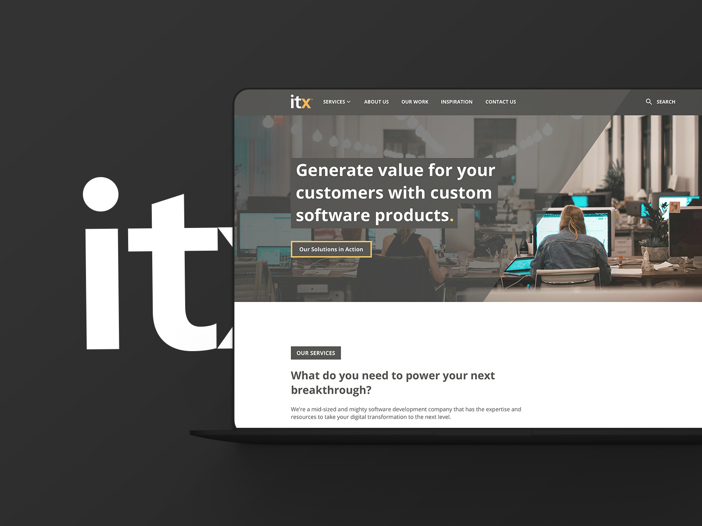
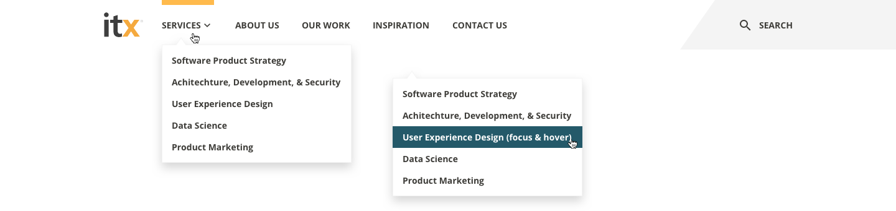
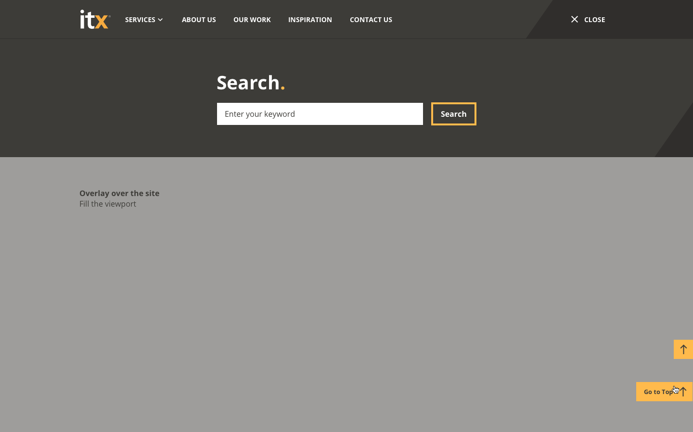
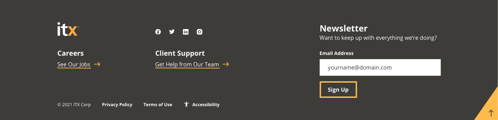
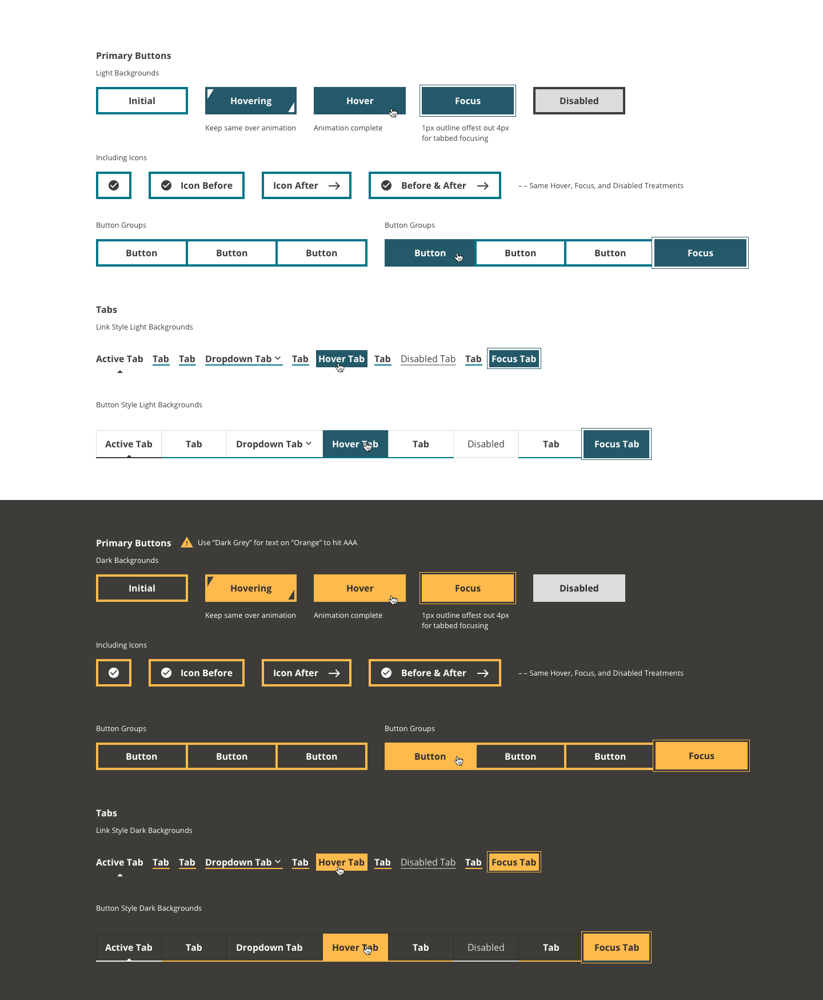
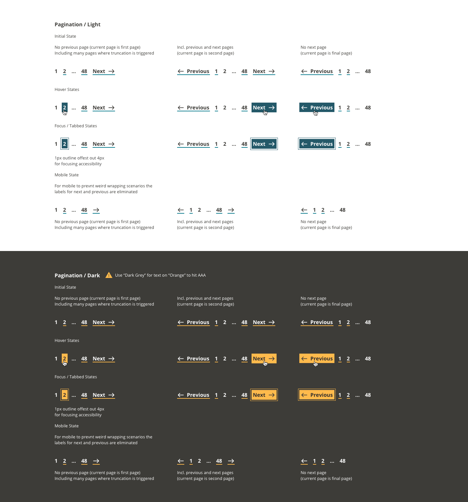

Skip to Content
ITX
Designing for an accessible future.

Challenge
The ITX.com website was identified as not being up to par on what we like for accessibility.
Outcome
I was brought in as one of the company experts on accessibility to bring the design in line with our standards.
The Discovery.
Plotting a Course to Inclusivity.
The start of the process began with an audit / discovery phase. The first pass was looked over by Susi Pallero, an accessibility solutions specialist, to assess every page of our website in detail. Using a combination of her expertise and industry accessibility tools, she surfaced 57 areas of improvement for accessibility on the site. Some of the checks included the following:
Our goal was to meet a minimum of WCAG 2.1 AA requirements – and AAA as often as possible – and we knew what obstacles were in our way. I took that initial audit and did a deep dive of our company's website, recording every color, typeface, block pattern, and the like to start the process of developing a new accessible design system.
It was discovered on this audit that a complete overhaul of the site was going to be needed. By doing so I could develop a new accessible design system and streamline set of blocks that could be built using Wordpress's block patterns to eliminate the reliance on third-party builders that previous iterations used. This would increase performance while making the editing experience for the marketing team more streamlined and easier to maintain.
True inclusive design goes beyond accessible design elements. The hero block on our old website featured a white male seemingly “educating” a group of women and employees of color. This photo inadvertently reinforces harmful biases and unbalanced power dynamics. Where you can, it's best to remove the depiction of hierarchies. Or use it as a chance to lift up underrepresented groups. We chose to avoid the use of imagery that hinted at hierarchy.
The Design System.
Designing a new inclusive experience and style guide.
When designing the new design system for ITX.com, proper thought and care had to be given to each element and component, along with how they interact with each other. Accessibility is about the details. Every color, contact form, button, and interactive site element needs to be accessible to every user.
A breakdown of some of the new system elements that were rebuilt include the following:
Visual Elements
Colors
Typography
Content
Interactive Elements
Colors.
A positive visual experience creates a positive first impression. Our website’s visual elements define our branding and set the foundation for the overall design. We ensured that the colors, typography, and content were all visually appealing and brand-aligned, while meeting a minimum of WCAG 2.1 AA accessibility requirements. In fact, most of our design met AAA requirements.
From our office headquarters to our website, ITX’s branding runs deep. Our color palette of orange and teal is a non-negotiable part of our online presence. However, some of these color combinations were also non-negotiable barriers to accessibility.
For example, a typical link with a teal background and white text doesn’t have sufficient color contrast to meet WCAG AA requirements.
The Solution.
Using ITX's existing color library as a starting point, I developed a new color system that tweaked all of the color values of the brand guide to hit a minimum contrast of AA and in many instances AAA with their strictly defined use cases. For instance, interactive elements on light backgrounds are accented by a new accessible teal, and on dark backgrounds, a new accessible orange. Which pulls to of the company's primary colors into actionable elements. While working with these colors I also defined equivalents for both digital and print applications. Each color has values for Hex, RGB, CMYK, and Pantone colors.
When we design elements with proper color contrast, we’re able to meet the visual needs of many more users. A site visitor will be able to better perceive the site, whether they have permanent disability, like color blindness, or are experiencing a temporary one, such as screen glare.
Typography & Content.
Consistent typography and content are central to website design. Keeping these element
uniform creates a cohesive user experience across the site. And creating clear and concise content allows users of all abilities to access the information they need – even if they’re just skimming the headings.
Fonts should be easy to read, links easy to follow, and tables and lists easy to navigate. Research shows that sans serif fonts are best for readability, so we chose Open Sans as our primary web font.
Whether a visually impaired site visitor is using a screen reader or a person with dyslexia is scanning for information, they should be able to read and understand the website without friction. Typography should also display clearly when a user is reading with an on-screen magnifier.
The World Wide Web Consortium has thorough guidelines and principles to follow when designing content, so we recommend that guide as a jumping-off point.
The Solution.
Using a type scale tool I developed a new type hierarchy system that would work on both mobile and desktop sizes while still being legible. The system also uses Rem units to be easily zoomed and controlled by those using accessibility devices.
Interactive Elements.
At ITX, we create people-centric software products, and UX was at the forefront of all we do. When reimagining our website, we knew that our interactive elements needed to be accessible and foster a positive user experience.
Navigation.
For both accessibility and extensibility, I designed light and dark modes for most visual elements, including the navigation bar. In instances where the navigation is part of an image based full-width hero, the dark navigation is used. Where is when there isn't a hero image the light navigation is used for a cleaner and uninterrupted look.
During this process, indicators for page selections, keyboard navigation, new hover and focus states, were all designed and built from the ground up.


Search & Overlay.
The search function around the site is a type of input field but with more specific styling. For the new ITX.com, we created an overlay treatment for search. This clear focus state allows users to keep track of the cursor. The overlay disappears when the user clicks away from the search box.

Footer.
A website’s footer is a hub for general information. ITX.com’s footer helps users navigate to our job openings, support page, and social media profiles, among other things. There’s also a field to sign up for our newsletter, Continuous Inspiration.
It’s a lot to pack into one block, so I arranged the content to create an intuitive user experience and with our developers and copy team, made sure that every icon has a clear alt text and every button has intuitive copy, so every user knows exactly where they’re navigating when interacting with the footer components.

The Rabbit Hole.
Check out further permutations of the navigation, search, footer, and dialog prompts.
Buttons and Controls.
The WCAG 2.1 AA requirements are central to designing accessible buttons. Our designers ensured that the hover and click states have clear contrast. The buttons on the new ITX website feature contrast of black on white, white on teal, white on dark gray, and black on orange.
The colors of the ITX.com buttons will hit AAA for the text and hit or exceed AA for all of the colors and controls.
As a rule, a site visitor should understand where a button leads without any other context. Buttons should also be large and in a logical location, so users can easily click on the element. This way, an individual can quickly determine a button’s purpose while scanning the page visually or using a screen reader. Myself and in many instances the copy team took a pass at rewriting most links and buttons along with all buttons designed with an accessible touch-friendly size.

Pagination.
The website’s pagination had similar styling to the buttons, both in color and behavior. Our designers ensured that the pagination element had clear hover and focus indicators for intuitive navigation.

All Button & Control Permutations.
Each button and control has it's place and use case for design consistency and accessibility.
Inputs & Forms.
Without the right accessibility features, input fields on your contact page are unavailable to users with disabilities. So, without inclusive design, your business is missing out on valuable contacts and conversations. And at the same time, users are missing out on valuable services and information.
When building an accessible contact form for ITX.com, our team focused on a few key factors. We ensured that users could navigate the input fields using either a mouse or keyboard, adding clear hover states for each of these methods.
Our development team also coded clear error and success messages. This way, site visitors using screen readers know whether they filled out the form correctly or need to re-enter their information into a specific field.
Remember, inclusive design requires clear and concise content. A vague error message will only confuse readers, dissuading them from filling out the contact form at all.
Radio buttons and checkboxes are also part of the contact form, and we applied similar design treatments to these. Our designers ensured that the radio buttons and checkboxes had clear contrast and focus states as well.
Building Content Blocks.
To ensure the site was going to be easy to build upon and maintain. A few building blocks were designed and coded to be plug and play using the Wordpress block builder system for easy and intuitive use.
With the design roadmap complete, it was time to assemble our new elements, putting the website together as the next phase of our agile kan-ban process. You’ll notice all of the previously mentioned elements as you scroll through ITX.com. However, we thought it would be helpful to break down the anatomy of a few of the larger content blocks that make up our site.
Our content design decisions all came down to structure. The layout within each content block, as well as the page, helps users understand which information is most important. Incidentally, this also helps search engines understand what the page is all about, aiding search engine optimization.
Each section of content merges text, buttons, audio players, and more, all with accessibility and usability in mind.
The "Hero" aka Header Block.
We wanted our hero blocks to live up to their name. Featuring high-contrast headings and text, overlay styling, eye-catching photos, and accessible buttons, the content blocks introduce the reader to the page topics.
Content Highlights Within Pages.
I merged high-contrast headings and paragraph text, clearly labeled buttons, and various styling options to create our fully accessible content highlight blocks. In most cases the photos and graphics are decorative, so they don’t include alternative text (remember, alt text is only for informational images!).
Podcast Blocks that Showcase Key Episodes.
ITX is lucky enough to feature inspiring voices on our Product Momentum podcast, so we want to highlight them throughout our website. This block incorporates many of the features listed above: a heading, paragraph text, and button with a clear label. You'll also notice a high-contrast audio player that users can control with a keyboard. We made sure that screen readers announce the audio player’s functionalities.
Share.
Like what you see? Please spread the word on your platform of choice: